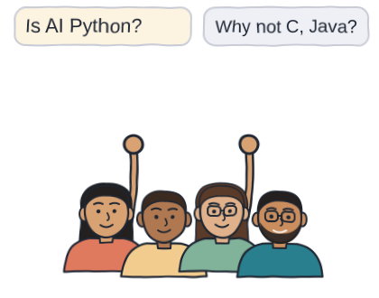
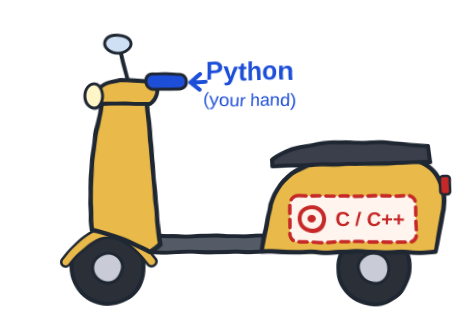
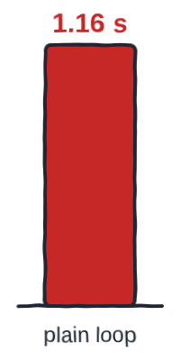
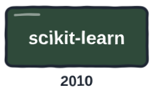
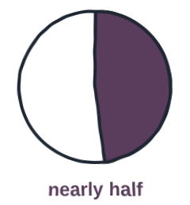
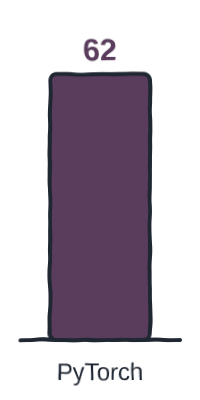
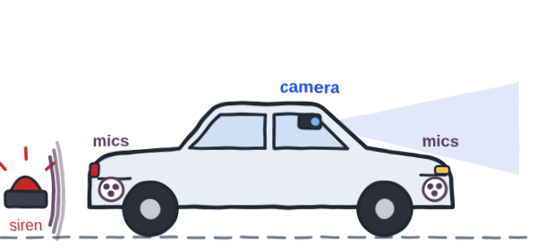
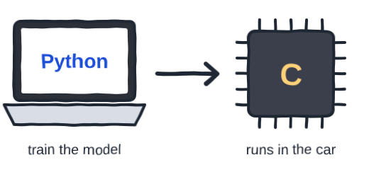

Prefer to watch? This post goes with the video (7:52). Open it on YouTube, where you can also leave a comment.
A strange fact
Python is a slow language, and its own documentation says so. Yet almost all of AI is built with it. At most of my workshops, students ask me about this.

- Is AI Python?
- Is Python AI?
- Why not use the other languages we already have, for AI?
- What is so special about Python?
These are good questions, and there is a puzzle inside them. Languages like C and Java run faster than Python, while AI runs billions of calculations.
It reads like English
Let's start with the person, not the computer. Say you want the computer to print one word: Hello.
Python: one line
print("Hello")
Java: five lines
public class Hello {
public static void main(String[] a) {
System.out.println("Hello");
}
}
Both programs do the same job, but most of the Java lines have nothing to do with hello. Try the Python one: press Run, change the word on the line marked # edit here, and run it again.
Why does that matter for AI? Because AI work is not written from fixed rules. You start with an assumption, run an experiment, look at the results and build on them. Then you go round again, many times.
How AI work really goes
start with an assumption → run an experiment → look at the results → build on them → and round again
Python reads close to plain English, so you can change one line and run it again straight away. Every try is quick, and in AI, quick tries matter most.
Who does the heavy work?
That still leaves our puzzle: if Python is slow, who does all the heavy work?
Say you ride a scooter to college. You turn the key and twist the accelerator, and that is all you do. Underneath, the engine does the hard work, and you never touch it. You still reach on time.

Python is your hand on the accelerator. You twist it, and an engine of fast code, written in C and C++, does the work. On graphics cards, that engine is CUDA. The heavy maths runs there, not in Python.
Fast code packed so that Python can call it is what we call a library. NumPy and PyTorch are two of them: NumPy's work is done by pre-compiled C code, and most of PyTorch is written in C++.
Let's time it
Say a shop has 10 million bills, and you want price times quantity, all added up. I asked an AI to write this two ways: a plain Python loop, and the same job handed to NumPy.
I ran both on my own laptop, using only the processor, with no graphics card.
| Laptop | Software | Method |
|---|---|---|
| Intel Core i7-1185G7 (11th generation), 32 GB RAM | Windows 11, Python 3.13, NumPy 2.2 | Each version run 5 times; the middle result (the median) kept |

Both gave the same answer, but NumPy was about 100 times faster, because the work moved out of Python and into C. So yes, Python is slow, but AI in Python is not.
The goal: see the gap between a plain loop and NumPy for yourself.
The steps: press Run and wait a few seconds. Then, on the line marked # edit here, make the number of bills smaller or bigger and run again.
Guess first: with 10 times fewer bills, will the gap shrink, grow, or stay about the same?
What you should see: "same answer: True", and NumPy many times faster than the loop. This page runs a smaller Python inside your browser, so your seconds will differ from my laptop's. Look at the gap, not the seconds.
How it became the language of AI
Python was not built for AI. Guido van Rossum started it in 1989, in the Netherlands, as a simple everyday language. And no, it is not named after the snake: it is named after a comedy show, Monty Python.
Then the tools for AI arrived, one after another.

Each new tool made the next one easier to build, so more people came and built still more tools. Many tools, together with the people who build them, form what we call an ecosystem.
The numbers
So where does Python stand today? Here are the numbers, checked in October 2026.
| What was measured | Python's share |
|---|---|
| New AI projects on GitHub | nearly half |
| AI research papers that shared their code | about 62 in 100 used PyTorch; TensorFlow just 2 |
| People learning to code | 72 in 100 use Python, the most of any language |


But is Python the most used language in the world? That depends on who you ask. The TIOBE index, which counts web searches, puts it at number 1. Stack Overflow's developer survey puts it at number 4, and GitHub at number 2.
The honest cost
That is the good side. Now, what does Python cost?
First, when you write your own loops over big data, you feel the slowness: about 100 times, as the timing showed.
Second, Python is not the answer for every job. Android apps are mostly written in Kotlin, and websites in your browser run on JavaScript.
From my own work
I have lived this myself. In 2019, I worked on a deep learning project in the automotive world. Cars with driver assistance, called ADAS, already had cameras as their eyes, and we were building their ears.

When you drive, you don't only see the things that need your attention; you also hear them. A horn is a warning, and a siren means an emergency for someone.
We trained the model in Python. But to run it inside the car's controller, we wrote the libraries underneath in C and flashed them onto the chip.

So, is AI Python? No. AI itself does not belong to any one language. Python wins for other reasons:
- It is easy to read, and easy to learn.
- It is open source.
- It has libraries for almost everything.
- A huge community keeps helping each other.
So use Python to build and try AI, and other tools where the job needs them.
When AI writes the code
One last question: if AI writes the code anyway, does the language even matter?
In this year's Stack Overflow survey, Python came first as the language people use AI tools with, just ahead of JavaScript. And the best-known tests of AI coding, such as SWE-bench, are in Python.
So very often, the code an AI hands you will be Python. Someone has to read it, check it, and fix it when it breaks. That someone is you.
The takeaway
- Python is not chosen for speed. It only looks fast, because engines written in C run under its hood.
- It wins because it is easy to read and quick to try, and AI work is many quick tries.
- AI does not belong to one language: Python to build and try, other tools where the job needs them.
That leaves you with a question. When an AI hands you a Python program, can you read it?
Count the lines, then mark the words
Ask any AI app for a program that adds up your monthly expenses, once in Python and once in Java. You can paste this, and then change "Python" to "Java":
- Put the two programs side by side, and count the lines of each.
- Mark every word you cannot explain.
Don't worry if you mark a lot. That list is where your learning starts.
One question for you: how many lines did each one take, and which one could you explain to a friend? And your guess at the start, about the slower language: was it right? Tell me under the video.
References
Every number on this page, and where it comes from. Checked on 11 Oct 2026.
- Measured for this post — Loop vs NumPy, on my laptop, 10 Oct 2026. Intel Core i7-1185G7 (11th gen), 32 GB RAM, Windows 11, Python 3.13.7, NumPy 2.2.6, no graphics card: 10 million price x quantity, plain loop 1.16 s, NumPy np.dot 0.010 s (median of 5 runs).
- Python Software Foundation — Python glossary: interpreted. Interpreted languages "generally also run more slowly" than compiled ones. link
- Peters, T. — PEP 20, The Zen of Python (2004). "Readability counts." link
- NumPy — What is NumPy?. NumPy's work is "executed by pre-compiled C code". link
- Paszke, A. et al. — PyTorch: An Imperative Style, High-Performance Deep Learning Library (NeurIPS 2019). "Most of PyTorch is written in C++." link
- My own measurement — 10 Oct 2026, Intel Core i7-1185G7, 32 GB RAM, Windows 11, Python 3.13.7, NumPy 2.2.6, no graphics card. 10 million price × quantity: plain loop 1.16 s, NumPy np.dot 0.010 s (median of 5 runs).
- Python Software Foundation — General Python FAQ. Python started in 1989 at CWI in the Netherlands, and is named after Monty Python's Flying Circus. link
- NumPy · scikit-learn · Google · PyTorch — Project histories. NumPy created 2005; scikit-learn first release 2010; TensorFlow open-sourced Nov 2015; PyTorch first releases 2016. link
- GitHub — Octoverse 2025. "Python now powers nearly half of all new AI repositories"; TypeScript passed Python as #1 by contributors in Aug 2025. link
- Papers with Code — Framework statistics, Q1 2025 (archived; the site closed in mid-2025). PyTorch in 61.9% of paper implementations, TensorFlow 2.2%. link
- Stack Overflow — Developer Survey 2025, Technology. Learning to code: 71.8% use Python (#1). All respondents: 57.9% (#4). link
- TIOBE — TIOBE Index, September 2026. Python #1 since October 2021 (17.76%). The index counts search-engine hits. link
- Android Developers · MDN — Kotlin-first; JavaScript. Android development is "Kotlin-first"; JavaScript is the scripting language of web pages. link
- Stack Overflow — Developer Survey 2026, Languages. Python is #1 as the language people "used AI tools or AI agents to work with" (39.0%, JavaScript 38.4%). link
- Chen, M. et al. · Jimenez, C. E. et al. — HumanEval (2021) · SWE-bench (2023). Two of the best known tests of AI coding are in Python: 164 Python problems; issues from 12 Python repositories. link